This step-by-step guide will help you calibrate the build platform to ensure the highest standard of print quality. See Instruction Manual / FAQ for more detail. Press START to proceed.
WARNING:
Z Axis will move towards the home position.